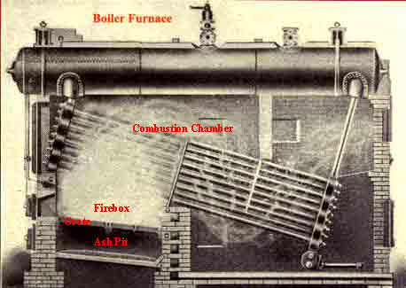
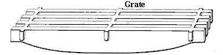

Construction of Boiler Furnace
Boiler Furnace Grate
Firebox and Combustion Chamber of Furnace
Ash Pit
The heat required for producing steam in a boiler is generated at boiler furnace by combustion of fuel.
What is Combustion?
Combustion is a chemical process during which oxygen is combined with different elements of fuel. During this combination, a definite amount of heat is produced per unit mass of combustible element depending upon the element with which the oxygen combines. The elements participate in combustion process are oxygen, hydrogen, carbon and sulfur. There are various other elements in the fuel (coal) which do take part in combustion process such as iron, silicon etc. They usually exist in small amount and are classed as impurities of fuel. These impurities producer certain waste during combustion of coal and remain in the form of ash and stored in the ash pit of steam boiler furnace , after combustion. The combustion of fuel including coal requires three stages to be completed.
1) The absorption of heat to rise the temperature of the fuel to the point of ignition.
2) The distillation and burning of volatile gasses.
3) Combustion of fixed carbon.
While the coal is fed to the boiler furnace in a pulverized form, the temperature of the coal is first raised to its ignition point the volatile matters of the coal so called hydrocarbons, such as marsh gas, tar, pitch, naphtha are separated from the coal and driven of in the gaseous form. These gases then combine with oxygen of air which is supplied through the bed of the hot bed of fuel (coal) of the steam boiler furnace . After the hydrocarbons are driven off from the coal, the solid carbon unites with oxygen of air and forms carbon monoxide and carbon dioxide. Any substances of the coal which are not combustible fall through the grate into the pit below the boiler furnace in form of ash. So far combustion process, sufficient air to be supplied in furnace. Generally approximately 12 pound of air is required to complete combustion of one pound of coal. But in practice twice or more of this quantity of air is supplied in the furnace by forced draft since ideal condition of combustion can not be achieved practically. It is always quite difficult to supply air to the all part of the steam boiler furnace uniformly. In the other hand, too mush air should not be supplied to the furnace. If air is supplied is in very higher rate than its specified rate then there may be a chance of blowing off the hydrocarbon gases before the combustion process is completed. So the air should be supplied to the furnace in high but controlled rate.

The main design and operation of the boiler furnace is to obtained combustion with minimum smoke. Smoke less combustion is proffered for mainly two reasons,
1) the smoke is a main cause of air pollution.
2) smoke is the indication of incomplete combustion. The unburned visible gases are shown in the form of smoke.
The principle of complete combustion is quite simple but is not always possible to carry out in steam boiler furnace . Introducing coal into the boiler furnace, rising the temperature to the burning point, and supplying enough air for the combustion may not be sufficient for a successful combustion. There is another factor which to be kept in mind during designing a furnace. It is equally important to mix up the air with combustible gases thoroughly and that is to be maintained at a sufficiently high temperature during the process. When fresh bituminous coal is fired, on the fuel bed of boiler furnace, the combustible gases are driven off and large portion of which remain unburned and are carried into the chimney if air is not mixed up with them properly.
There are many air mixing processes developed for steam boiler furnace. One of the popular methods of boiler furnace is to providing fire brick lined combustion chamber of ample size with suitable baffles for proper mixing the gases with the air, the introduction of sufficient heated air in the combustion to consume the combustible gages before reaching the heating surface of the boiler.
Construction of Boiler Furnace
For successful combustion a boiler furnace has some essential parts in its construction, such as
1) a grate for supporting fuel (coal).
2) combustion chamber – in which the combustion takes place Means of supplying fresh air.
3) an ash pity for collecting and catching the refuses from the fuel during combustion.
Boiler Furnace Grate

Grate is provided in a steam boiler furnace for supporting the solid fuel in the furnace. Grate is so designed that it can also allow air to admit air in the solid fuel for combustion. The openings of the grate must not be so large that they allow the unburned fuel partials to fall through and on the other hand these openings must not be so narrow that they obstruct sufficient amount of air to pass through the fuel.
Firebox and Combustion Chamber of Furnace
Firebox of boiler furnace is the place just above the grate and combustion chamber is the extension of this where combustion of volatile hydrocarbons take place. The heat is produced due to combustion is absorbed by the steam boiler surface at the top of the combustion chamber. Different fire bricks wall and baffles are provided in the combustion chamber proper mixing of air with combustible gases.
Ash Pit
Ash pit of steam boiler furnace is a chamber provided below the grate to catch the refuse (ash) from the fire above. Ash pit also functions as supply chamber of air through the grate. There must be sufficient height between the bottom floor of the ash pit and the grate to give plenty of air space. In common practice to slope the pit floor towards the front, to facilitate the removal of ashes.
 by
by